5520B10 starter motor - r+r
- Path
- Procedures > 55 ELECTRICAL EQUIPMENT > 5520 ENGINE STARTING > 5520B starter motor and components > 5520B10 starter motor - r+r
- Kind
- repair procedure (removal / refitting; the operation number is the code)
- Applies to
- all engines; all production periods
- Interactive page
- https://sloeber94.github.io/elrnDB-fDbl/en/#/2584912
Applies to: engines: 1.2 8v, 1.9 DIESEL; all production periods
 Removing
Removing
 Refitting
RefittingPosition the vehicle on a lift.
Disconnect the negative battery terminal.
Op. 7055B54 PROTECTION/GUARD UNDER ENGINE - R.R.
1. Undo the nuts (1a) and disconnect the electrical connections (1b) from the starter motor.
Description | Connector | |
|---|---|---|
1b | Starter motor |
2. Undo the retaining bolts (2a) and remove starter motor (2b) from the lower part of the engine compartment.
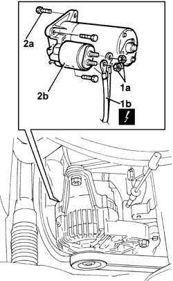
Applies to: engines: 1.2 8v, 1.9 DIESEL; all production periods
Refitting
RemovingPlace the starter motor in position and tighten the upper bolts and the lower nut.
Fastening | Component | dia | Value (daNm) | |
|---|---|---|---|---|
- | Bolt | STARTER MOTOR | - | (engine) 2.7 |
Fastening | Component | dia | Value (daNm) | |
|---|---|---|---|---|
- | Nut | STARTER MOTOR | - | (gearbox) 2.7 |
Connect the starter motor electrical connections and secure them by tightening the nuts to the specified torque.
Fastening | Component | dia | Value (daNm) | |
|---|---|---|---|---|
- | Nut | BATTERY/MOTOR LEAD | M8 | (starter motor) 2.4 |
Op. 7055B54 PROTECTION/GUARD UNDER ENGINE - R.R.
Connect the negative battery terminal and remove the vehicle from the lift.
Applies to: engines: 1.6 16v; all production periods
Removing
RefittingPosition the vehicle on a lift.
Disconnect the negative battery terminal.
Description | Connector | |
|---|---|---|
- | Battery |
Op. 7055B54 PROTECTION/GUARD UNDER ENGINE - R.R.
1. Disconnect the electrical connection from the starter motor.
Description | Connector | |
|---|---|---|
1 | Starter motor |
2. Open the cover (2a) and disconnect the electrical connection (2b) from the starter motor.
Description | Connector | |
|---|---|---|
2b | Starter motor |
3. Undo the bolts (3a) and remove the starter motor (3b).
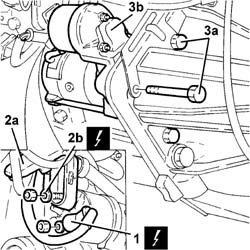
Applies to: engines: 1.6 16v; all production periods
Refitting
RemovingCheck that the starter motor is not damaged.
Place the starter motor in its housing and secure it tightening the bolts to the recommended torque.
Fastening | Component | dia | Value (daNm) | |
|---|---|---|---|---|
- | Bolt | STARTER MOTOR | M8 | (Gearbox side) 2.2 |
Connect the electrical connections for the starter motor and close the cover.
Description | Connector | |
|---|---|---|
- | Starter motor |
Connect the electrical connection for the starter motor.
Description | Connector | |
|---|---|---|
- | Starter motor |
Op. 7055B54 PROTECTION/GUARD UNDER ENGINE - R.R.
Connect the negative battery terminal.
Description | Connector | |
|---|---|---|
- | Battery |
Remove the vehicle from the lift.
Applies to: engines: 1.9 JTD 8V; all production periods
Removing
RefittingMake sure that the ignition key is in the OFF position, then disconnect the negative battery terminal (-).
Description | Connector | |
|---|---|---|
- | Battery |
1. Undo the nuts (1a) and remove the fuel filter assembly (1b).
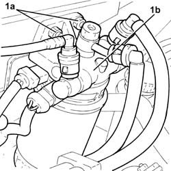
Applies to: engines: 1.9 JTD 8V; all production periods
1. Disconnect the electrical connections from the starter motor.
Description | Connector | |
|---|---|---|
1 | Starter motor |
2. Undo the bolts (2a) and remove the starter motor (2b).
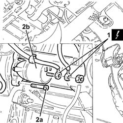
Applies to: engines: 1.9 JTD 8V; all production periods
Refitting
Removing1. Place the starter motor (1a) in its housing and secure it tightening the bolts (1b) to the recommended torque.
Fastening | Component | dia | Value (daNm) | |
|---|---|---|---|---|
1b | Bolt | STARTER MOTOR | M8 | (Gearbox side) 2.4 - 3.0 |
2. Connect the electrical connections to the starter motor.
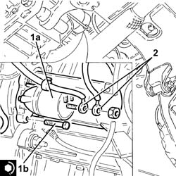
Applies to: engines: 1.9 JTD 8V; all production periods
Place the fuel filter back in its housing and fasten it using the nuts.
Connect the negative battery terminal (-).
Applies to: engines: 1.3 JTD 16V; all production periods
Removing
RefittingPosition the vehicle on a lift.
Make sure that the ignition key is in the OFF position, then disconnect the negative battery terminal.
Description | Connector | |
|---|---|---|
- | Battery |
1. Open the protective cover (1a), loosen the nut (1b) and disconnect the starter motor electrical connections (1c).
Description | Connector | |
|---|---|---|
1c | Starter motor |
2. Undo the bolts (2a) and remove the starter motor (2b).
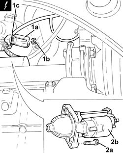
Applies to: engines: 1.3 JTD 16V; all production periods
Refitting
Removing1. Place the starter motor (1a) in its housing and secure it tightening the bolts (1b) to the recommended torque.
Fastening | Component | dia | Value (daNm) | |
|---|---|---|---|---|
1b | - | STARTER MOTOR | M8 | (Engine crankcase side) 2.3 - 2.8 |
2. Connect the electrical connections (2a) to the starter motor, secure with the nut (2b) and close the protective cover (2c).
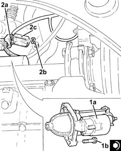
Applies to: engines: 1.3 JTD 16V; all production periods
Connect the negative battery terminal.
Description | Connector | |
|---|---|---|
- | Battery |
Remove the vehicle from the lift.
Applies to: engines: 1.4 8v; all production periods
Removing
Refitting- Position the vehicle on a lift.
- Open the bonnet.
1. Working from the left side of the engine, unscrew the upper starter motor bolt.
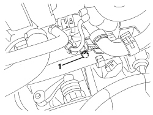
Applies to: engines: 1.4 8v; all production periods
- Raise the vehicle.
1. Open the protective cover for the starter motor electrical connections.
2. Undo the nut.
3. Disconnect the electrical connections (3a, 3b) from the starter motor.
Description | Component |
|---|---|
STARTER MOTOR |
4. Unscrew the lower starter motor bolt.
5. Remove the starter motor.
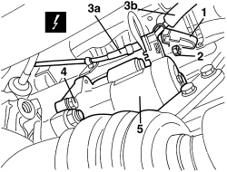
Applies to: engines: 1.4 8v; all production periods
Refitting
Removing- Check that the starter motor is not damaged.
1. Place the starter motor in position.
2. Screw in the lower starter motor bolt and tighten to the recommended torque.
Value daNm | Fastening | Component | dia | |
|---|---|---|---|---|
2 | 2.25 ÷ 2.75 | Bolt | Starter motor | M8 |
3. Connect the electrical connections for the starter motor, tighten the nut and close the protective cover.
Value daNm | Fastening | Component | dia | |
|---|---|---|---|---|
3 | 0.7 ÷ 1.1 | Nut | Positive lead (+30) on starter motor | M8 |
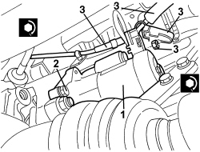
Applies to: engines: 1.4 8v; all production periods
- Lower the vehicle.
1. Screw in the upper starter motor bolt.
Value daNm | Fastening | Component | dia | |
|---|---|---|---|---|
1 | 2.25 ÷ 2.75 | Bolt | Starter motor | M8 |
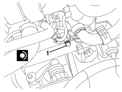
Applies to: engines: 1.4 8v; all production periods
- Close the bonnet.
- Remove the vehicle from the lift.
Topics linked from this page (4)
Topics that link to this page (9)
- B02 STARTER MOTOR NOT WORKING
- B10 ENGINE DOES NOT START / UNDER NO CIRCUMSTANCES
- B13 ENGINE STARTS WITH DIFFICULTY'
- 1020D26 flywheel side oil seal cover - r+r
- 1024B10 engine flywheel - r + r for versions with manual gearbox
- 1080D20 oil vapour pipe from cam cover to rngine block r r
- 1810A20 clutch - r + r
- 2110A10 manual gearbox and differential - r + r
- 5520B12 starter motor - r+r for versions with a/c